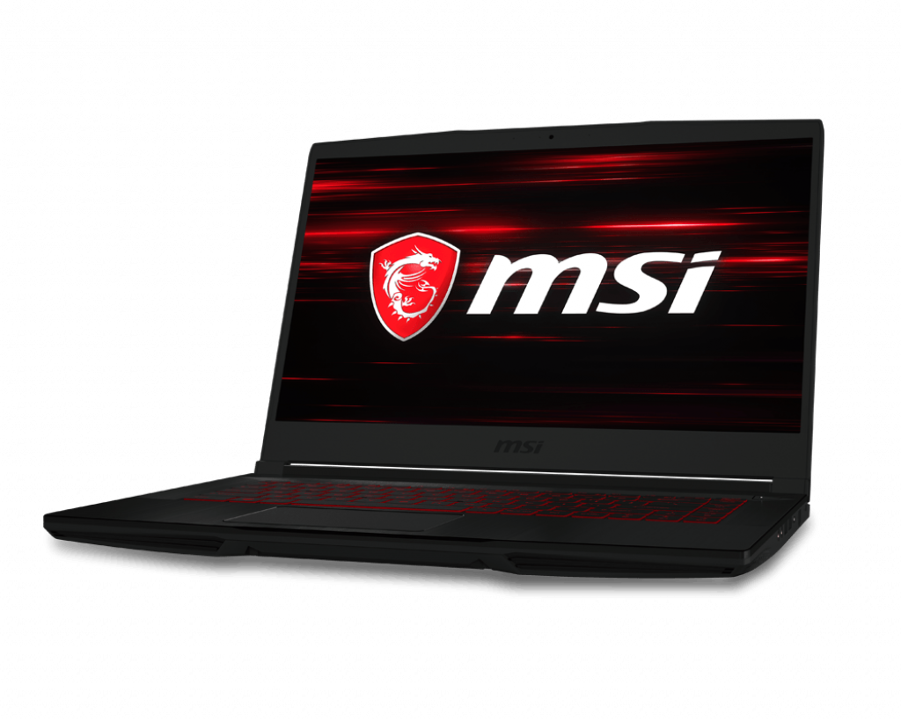

MSI Gf63
Technical SpecsProcessor : 9th Generation Intel i5/ 9th Generation Intel i7
OS : Windows 10
RAM : 8GB
Cores : 4/6
Storage SSD : 128GB/256GB/512GB/1TB
HDD : 1TB/ 2TB
GPU : Nvidia GTX 1050 Ti/Nvidia GTX 1650
ScreenSize : 15.6 inch
Brightness : 300 nits
Tru-tone : No
Resolution : 1920 x 1080 pixels
WebcamFront : 5 MP
Buy NowPrice : $699
Amazon :
Buy
Review
The GF63 is MSI's Entry-level Gaming laptop at an affordable rate. The GF63 is a slim and sleek, red and black gaming laptop with good performance to offer. The laptop has the latest 9th generation Intel processors coupled with Nvidia Gtx graphics. The design of the laptop has the typical Gamery vibes to it with its red accents, red backlight and overall black metal body. This laptop is one of the few entry level gaming laptop with a metal lid. The graphics options are limited to Nvidia's GTX 1050 Ti and Nvidia GTX 1650, both of which are adequate for light to medium gaming, i.e. 60FPS+ for light titles like CS:GO, Rocketleague, PUBG, Fortnite. And 40-50 FPS for Bigger Titles like GTA V, Watch dogs and 30 FPS for the latest AAA games. This makes it a good option for youngsters and students who are looking for a gaming laptop at their budget. Check out the MSI GF63 in the link below.
Amazon Link: View